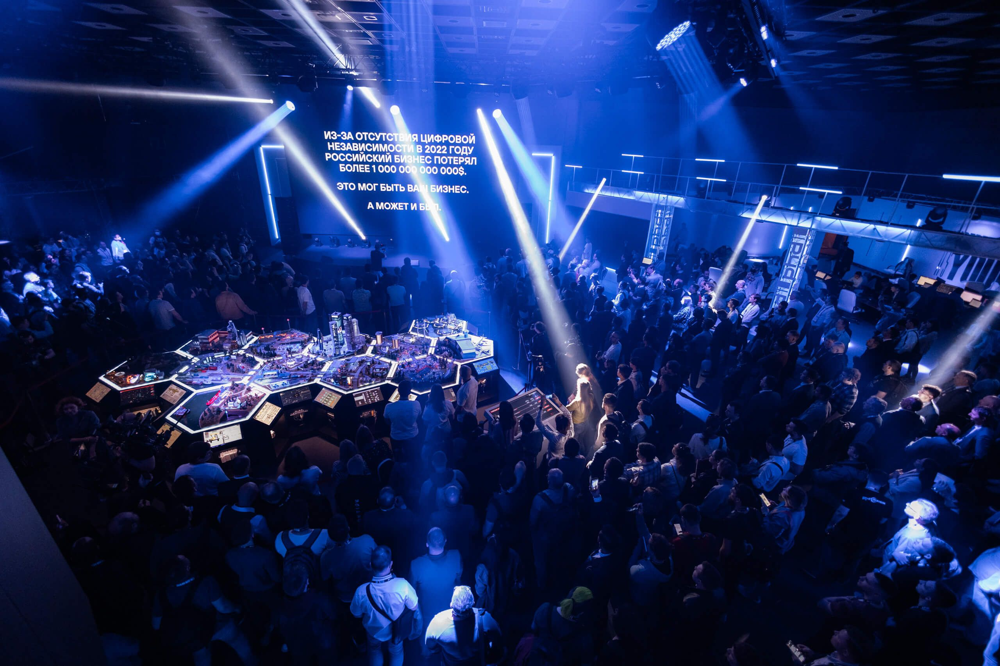

ДОКЛАДЫ, ИНВЕСТИЦИИ И ПРЕЗЕНТАЦИЯ ПЛАТФОРМЫ BUG BOUNTY — КАК PHDAYS 11 СТАЛ САМЫМ ПОСЕЩАЕМЫМ МЕРОПРИЯТИЕМ В СВОЕЙ ИСТОРИИ
Статья о международном форуме по практической безопасности Positive Hack Days 11 и проведенной в рамках этого мероприятия открытой кибербитве The Standoff.
Форум стал самым посещаемым в своей истории, с более чем 130 000 онлайн-зрителями и 10 000 посетителями оффлайн-площадки в Москве. На форуме прошли доклады, секции, конкурсы и другие мероприятия. Основное внимание было уделено The Standoff, которая представляла виртуальное государство F с несколькими отраслями, включая черную металлургию, электроэнергетику и нефтяную промышленность. Команды белых хакеров соревновались с командами атакующих, и было реализовано множество недопустимых событий, включая остановку нефтепродуктопровода и коллапс в аэропорту.
Атакующие команды нарушили безопасность различных отраслей виртуального государства F, обнаруживая уязвимости в системах, которые имеют прямое отношение к реальным инфраструктурам. Нефтяная промышленность стала объектом наибольшего количества атак, и команда Codeby стала инициатором серьезных инцидентов, напоминающих прошлогоднюю атаку на американскую компанию Colonial Pipeline. Была также атакована транспортная компания Heavy Logistics.
На форуме присутствовали команды защитников, которые расследовали инциденты, отслеживали атакующих и предотвращали недопустимые события. Победителем соревнований стала команда Codeby, набравшая наибольшее количество баллов.

Важным моментом на форуме был запуск платформы The Standoff 365 Bug Bounty, которая позволит компаниям и исследователям безопасности сотрудничать для поиска уязвимостей и оценки защищенности систем. Это реакция на резкий рост киберугроз и позволит компаниям оценить свою защищенность с помощью широкого круга экспертов.
Кроме соревнований и активных действий виртуальной кибербитвы, на форуме Positive Hack Days 11 также проходили доклады и секции, нацеленные на практическую безопасность и киберзащиту. Ведущие эксперты и профессионалы из различных областей делились своими знаниями, опытом и новейшими технологиями в области информационной безопасности.
Одним из ключевых моментов форума стало обсуждение актуальных киберугроз и вызовов, с которыми сталкиваются организации и государства. Это включало в себя доклады о новейших методах атак, таких как социальная инженерия, фишинг и другие виды мошенничества в сети. Участники форума обсуждали также вопросы кибербезопасности в области медицины, финансов, телекоммуникаций и других секторов.
Форум Positive Hack Days 11 также предоставил возможность установления партнерств и сетевых связей между профессионалами в сфере информационной безопасности. Множество компаний, организаций и стартапов представили свои продукты и решения для защиты от киберугроз. Участники имели возможность установить контакты с потенциальными партнерами и клиентами, обсудить с ними текущие и будущие проекты.
На форуме обсуждались инвестиции в кибербезопасность, состояние рынка ИБ, опыт выхода на биржу, изменения на фондовом рынке и новые подходы к работе с инвесторами.
Компания Positive Technologies организовала форум, совместно с группой компаний Innostage, которая помогла в развертывании и поддержке инфраструктуры. Эксперты CyberART отслеживали противостояние, контролировали действия команд, выступали в качестве менторов и демонстрировали реализованные атаки.
Бизнес-партнерами форума стали разработчик решений ИБ Security Vision, национальный провайдер сервисов и технологий ИБ «Ростелеком-Солар» и дистрибьютор ПО для любого бизнеса MONT. Технологический партнер — «Азбука вкуса». Партнеры PHDays 11 — компании Axoft, Fortis, «ICL Cистемные технологии», InfoWatch, «Marvel-Дистрибуция», R-Vision, «Газинформсервис», «Пангео Радар», «Инфосистемы Джет», Liberum Veritas, IBS Platformix, «УЦСБ».
Команды “красных” атаковали инфраструктуру Государства F, в то время как команды “синих” участвовали в киберучениях, расследовали инциденты, отслеживали перемещения атакующих, изучали техники злоумышленников и накапливали опыт предотвращения недопустимых событий.
Positive Hack Days 11 стал важным событием для кибербезопасности и информационной безопасности в целом. Форум продемонстрировал, что угрозы в онлайн-мире продолжают расти, и необходимо активное сотрудничество между специалистами, организациями и государствами для эффективной защиты информационных ресурсов и инфраструктур.